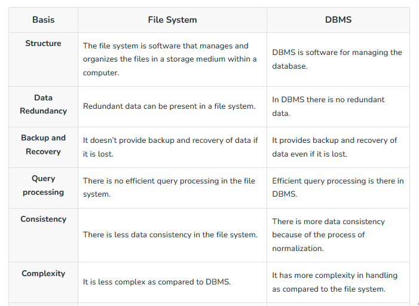
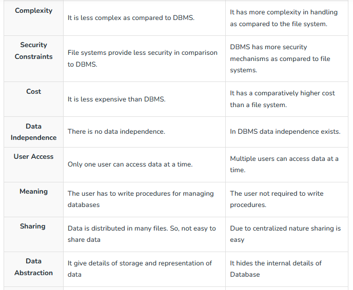

What is DBMS?
A database management system (DBMS) is composed of two major parts - a database and a management system. Now, what is meant by a database and a management system.
Database : is a collection of interrelated data.
Management System : is a set of programs to manage/handle something.
So, a database management system is a software or technology used to manage
data from a database.
Some popular databases are MySQL, Oracle,
MongoDB, etc. DBMS provides many operations e.g. creating a database,
Storing in the database, updating an existing database, delete from
the database.
Database is a system that enables you to store, modify and retrieve data in an organized way. It also provides security to the database. In this Database Management System tutorial you’ll learn basic to advanced topics like ER model, Relational Model, Relation Algebra, Normalization, File Organization, etc.
General Terms in DBMS
Data : Data may be defined as the raw facts and figures. For example-anything like a number or name of a person or a place etc. Sheetal,26,table,104611,ABC are all data.
Information : This introduces another term 'information'. Information is the processed form of data. It is the data that has been converted into a more useful intelligle form.
For example : Age - 26 years, customer Name - Sheetal, account number - 104611 are all a part of information.
Knowledge : If we add a decision making power to information, it becomes knowledge i.e., a processed form of information knowledge. Information containing wisdom is known as knowledge.
Difference between data and information.
| DATA | INFORMATION |
|---|---|
| Data refers to the lowest abstract or a raw input which when processed or arranged makes meaningful output. |
Information is the processed outcome of data. It is derived from data. |
| Data by itself alone is not significant and is not directly in a usable format. | Information is significant by itself and is in the format that can be directly used. |
| Data is the lowest level of knowledge. Example : if you have a list 'seven wonders of the world', it is data. |
Information is the second level i.e., one level above data. Example : If you have a book giving details of each wonder, it is information. |
| Observations and recording are donw to obtain data. | Analysis is done to obtain information. |
| Data alone cannot be of any help in decision making. | Information can be of considerable help in decision making. |
- Data and information are the two terms that generally used interchangeably by computer professionals, although there being
a significant difference between them. - Data is the basic raw material like numbers, alphabets, words, social symbols, etc, on which the computer programs work. But these just by themselves have no meaning.
Once we add context to this raw material so that its meaning is clear, it becomes information.

SCHEMA & INSTANCE
The plan or scheme of the database is known as Schema. Schema gives the names of the entities and attributes. It specifies the relationship among them. It is a framework into which the values of the data items (or fields) are fitted. The plans or format of schema remains the same. Bur the values fitted into this format changes from instance to instace. Schema includes the definition of teh database name, the record type and the components that make up those records.
INSTANCE is generally refered as the data present in the database at any particular point of time also called database instance. Therefore, many database instances can correspond to the same database schema. The schema is sometimes called the intension of the database, while an instance is called an extension (or state) of the database.
File System V/S DBMS


Advantages of DBMS
Disadvantages of DBMS
- Complex design : Database design is complex, difficult and time consuming.
- Cost of Staff Training – Educated staff (database administrator, application programmers, data entry operations) who maintains the database management system also requires a good amount. We need the database system designers to be hired along with application programmers. Alternatively, the services of some software houses need to be taken. So there is a lot of money which needs to be spent on developing software.
- Performance : The traditional file system is written for small organizations and for some specific applications due to which performance is generally very good. But for the small-scale firms, DBMS does not give a good performance as its speed is very slow. As a result, some applications will not run as fast as they could. Hence it is not good to use DBMS for small firms. Because performance is a factor that is overlooked by everyone. If performance is good then everyone (developers, designers, end-users) will use it easily and it will be user-friendly too. As the speed of the system totally depends on the performance so performance needs to be good.